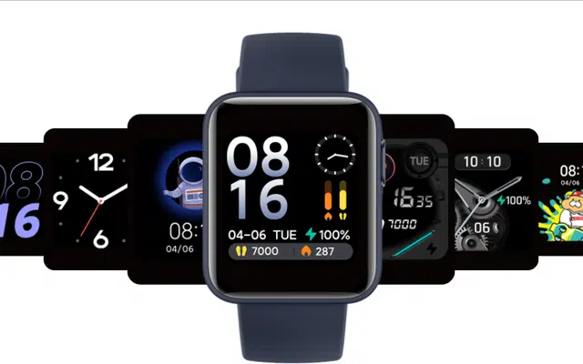

Xiaomi ra mắt Mi Watch Lite quốc tế: Pin 9 ngày, đo nhịp tim, chống nước 5ATM, giá khoảng 50 USD

Mi Watch Lite là phiên bản quốc tế của chiếc đồng hồ Redmi Watch.
Tháng trước, Xiaomi đã cho ra mắt Redmi Watch, chiếc smartwatch đầu tiên mang thương hiệu Redmi. Ngày hôm nay, Xiaomi ra mắt phiên bản quốc tế của Redmi Watch với tên gọi chính thức là Mi Watch Lite. Chiếc đồng hồ thông minh này sẽ được bán ra tại các thị trường bên ngoài Trung Quốc, do đó mà người dùng tại Việt Nam sẽ dễ dàng mua và sử dụng hơn là Redmi Watch.
Xiaomi ra mắt Mi Watch Lite quốc tế: Pin 9 ngày, đo nhịp tim, chống nước 5ATM, giá khoảng 50 USD - Ảnh 1.
Về mặt thiết kế và thông số kỹ thuật, Mi Watch Lite thực chất là một chiếc Redmi Watch. Chiếc đồng hồ này có thiết kế đơn giản với mặt vuông, chỉ nặng 35G với dây đeo và 31g không có dây đeo. Nó có 3 màu là đen, trắng ngà và xanh navi, cùng với 5 màu dây khác nhau.
Xiaomi ra mắt Mi Watch Lite quốc tế: Pin 9 ngày, đo nhịp tim, chống nước 5ATM, giá khoảng 50 USD - Ảnh 2.
Mặt đồng hồ có thiết kế cong 2,5D, phần thân được sơn mờ và nút bấm bằng kim loại. Dây đeo là vật liệu TPU thân thiện với da, đáng tiếc là không có tùy chọn dây đeo bằng vật liệu khác.
Xiaomi ra mắt Mi Watch Lite quốc tế: Pin 9 ngày, đo nhịp tim, chống nước 5ATM, giá khoảng 50 USD - Ảnh 3.
Mi Watch Lite có màn hình cảm ứng màu TFT 1,4 inch, mật độ điểm ảnh 323 PPI, với hơn 120 mặt số có thể thay đổi theo ý thích.
Xiaomi ra mắt Mi Watch Lite quốc tế: Pin 9 ngày, đo nhịp tim, chống nước 5ATM, giá khoảng 50 USD - Ảnh 4.
Về tính năng, Mi Watch Lite hỗ trợ theo dõi nhịp tim, theo dõi giấc ngủ và theo dõi luyện tập thể thao. Nó có thể ghi lại sự thay đổi nhịp tim trong 24 giờ, nhịp tim trung bình khi nghỉ ngơi trong 30 ngày và có cả chức năng luyện thở. Mi Watch Lite có tới 11 chế độ theo dõi luyện tập thể thao.
Chiếc smartwatch này cũng có thể theo dõi lượng calo tiêu thụ, đếm bước đi, số lần bạn đứng dậy và nhắc nhở bạn vận động khi ngồi quá lâu.
Xiaomi ra mắt Mi Watch Lite quốc tế: Pin 9 ngày, đo nhịp tim, chống nước 5ATM, giá khoảng 50 USD - Ảnh 5.
Mi Watch Lite được trang bị pin 230 mAh, được Xiaomi khẳng định là có thể sử dụng tới 9 ngày chỉ với một lần sạc. Chiếc đồng hồ này còn có khả năng chống nước 5ATM (độ sâu 50m).
Hiện tại Xiaomi vẫn chưa tiết lộ giá bán của Mi Watch Lite. Tuy nhiên Redmi Watch có giá bán khoảng 45,5 USD, do đó Mi Watch Lite được cho là sẽ có giá bán khoảng 50 USD.
Xiaomi ra mắt Mi Watch Lite quốc tế: Pin 9 ngày, đo nhịp tim, chống nước 5ATM, giá khoảng 50 USD - Ảnh 6.